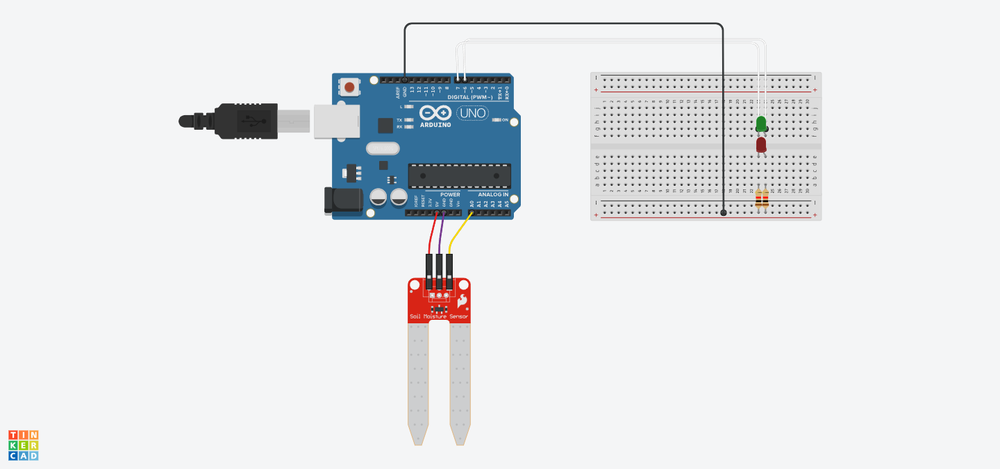
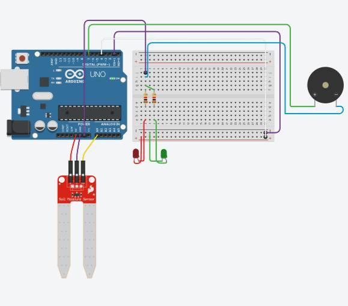

A smart microcontroller-driven agricultural telemetry system that measures real-time soil hydration via capacitive resistance, providing instant dual-modality alerts using LED visual indicators and a PWM speaker audio frequency synthesizer.
Microchip ATmega328P 16MHz processor orchestrating 10-bit analog conversion (A0), GPIO switching (D1, D3), and PWM tone synthesis (D5).
Designed and built to address agricultural water optimization, preventing plant desiccation during dry seasons through responsive embedded telemetry.
In urban gardening and smallholder agriculture, irregular watering schedules and seasonal droughts often lead to irreversible root dehydration or over-watering root rot. Without objective soil telemetry, caretakers rely on inaccurate visual soil surface inspection.
This system deploys a capacitive/resistive probe directly into the plant root zone. The Arduino continuously reads the analog voltage divider signal on pin A0, computes the hydration ratio against calibrated saturation, and actuates visual and audible alerts in real time.
Test the exact firmware logic and Web Audio speaker sound synthesizer directly in your browser. Drag the soil moisture slider to observe the LEDs, audio alerts, plant response, and live Serial Monitor.
Adjust the simulated probe depth/hydration in soil. The firmware compares the ratio against maximum calibrated saturation.
ratio <= 0.10: Red LED ON, 1000Hz Tone (2s delay)0.10 < ratio <= 0.30: Red LED ON, noTone()ratio > 0.30: Green LED ON, 1500Hz ToneSerial.println(currentMoistureLevel); telemetry in real-time.
Recorded laboratory demonstration video of the assembled Arduino prototype in action, along with high-resolution circuit wiring photos and schematics.

Assembled testing rig: Arduino Uno R3 connected to the capacitive soil probe, dual diffused LEDs with 10kΩ current-limiting resistors, and the speaker output line.

Complete breakdown of all 10 hardware elements utilized in assembling the Soil Moisture Sensor system, their technical roles, and operational specifications.
| # | Component Name | Technical Specification | Role & Function in Project | Interfacing Pin |
|---|---|---|---|---|
| 01 | Arduino Uno R3 | ATmega328P, 16MHz clock, 14 Digital I/O, 6 Analog In, 5V logic | Central microcontroller; executes firmware, computes ratio, and actuates outputs. | System Hub |
| 02 | Soil Moisture Sensor | Dual-prong probe measuring dielectric/resistive conductivity in soil | Detects soil moisture by measuring current resistance (higher moisture = lower resistance). | Pin A0 (Analog) |
| 03 | HM-Sensor Series Module | Signal conditioning comparator / buffer module | Regulates sensor voltage stability and conditions raw input range for the Arduino ADC. | Interfaced w/ A0 |
| 04 | Solderless Breadboard | Standard 830 tie-point dual-bus prototyping board | Enables modular breadboard circuit assembly and rapid prototyping without soldering. | Circuit Bus |
| 05 | Green LED | 5mm diffused, 2.0V forward voltage, 20mA nominal | Primary visual indicator for optimal soil moisture (> 30% threshold). | Pin D1 (Digital) |
| 06 | Red LED | 5mm diffused, 1.8V forward voltage, 20mA nominal | Visual warning indicator for dry/depleted soil (≤ 30% and ≤ 10% critical state). | Pin D3 (Digital) |
| 07 | Resistors (10kΩ) | 1/4W metal film current-limiting resistors | Limits current flowing to the LEDs to prevent thermal runaway and protect microcontroller pins. | Series with LEDs |
| 08 | Speaker / Piezo Transducer | 8Ω / Piezo electromagnetic audio transducer | Generates audible alert tones using PWM frequencies (1000Hz alert, 1500Hz confirmation, 5-6kHz boot). | Pin D5 (PWM) |
| 09 | Jumper Wires | 22AWG Male-to-Male and Male-to-Female Dupont wires | Facilitates dependable electrical connections between the sensor, breadboard, and Arduino. | Harness Wiring |
| 10 | Power Source & USB Type A/B | 5V DC USB regulated supply from PC or 9V DC adapter | Provides steady operational voltage and serves as the firmware upload channel from Arduino IDE. | 5V / USB / GND |
Complete, production-tested sketch running on the ATmega328P microcontroller, featuring dynamic ratio calculation, PWM square wave frequency synthesis, and serial debugging output.
// Arduino: Soil Moisture Sensor for Plants Modified w/ Speaker
// Team Lead: Marcial Lawrence Jr V. Caronan | Datamex College of Saint Adeline
int greenLight = 1; // Pin for Green LED (Above 30% moisture level)
int redLight = 3; // Pin for Red LED (Below 10% moisture level)
int speakerPin = 5; // Pin for speaker (Replaces buzzer via PWM)
int maximumMoistureLevel; // Maximum moisture level (calibrated baseline)
int currentMoistureLevel; // Current moisture level (reading from sensor)
void moistureDetection() {
float moistureRatio = (float)currentMoistureLevel / (float)maximumMoistureLevel;
// Moisture level less than 10%: "I'm thirsty" sound and red light
if (moistureRatio <= 0.1) {
digitalWrite(greenLight, LOW); // Turn off green light
digitalWrite(redLight, HIGH); // Turn on red light
tone(speakerPin, 1000, 500); // 1000Hz Sound for "I'm thirsty"
delay(2000); // Wait for 2 seconds before proceeding
}
// Moisture level between 10% and 30%: Red light (no sound)
else if (moistureRatio <= 0.3 && moistureRatio > 0.1) {
digitalWrite(greenLight, LOW); // Turn off green light
digitalWrite(redLight, HIGH); // Keep red light on
noTone(speakerPin); // No sound
}
// Moisture level above 30%: "I'm full" sound and green light
else {
digitalWrite(greenLight, HIGH); // Turn on green light
digitalWrite(redLight, LOW); // Turn off red light
tone(speakerPin, 1500, 500); // 1500Hz Sound for "I'm full"
}
}
void setup() {
// Initialize output pins for LEDs and speaker
pinMode(greenLight, OUTPUT); // Pin for Green LED
pinMode(redLight, OUTPUT); // Pin for Red LED
pinMode(speakerPin, OUTPUT); // Pin for Speaker
// Initialize the soil moisture sensor pin (A0)
pinMode(A0, INPUT);
// Initialize moisture level (calibrated to maximum level)
maximumMoistureLevel = analogRead(A0);
// Initial sound to indicate that the program has started
tone(speakerPin, 5000, 500); // High pitch for startup sound
delay(200); // Small delay to separate the sounds
tone(speakerPin, 6000, 500); // Another indication sound
delay(600); // Delay to allow the sound to finish
}
void loop() {
// Read the current moisture level from the sensor
currentMoistureLevel = analogRead(A0);
// Call moistureDetection to determine what light and sound to play
moistureDetection();
// Short delay to prevent overloading the microcontroller
delay(100);
// Print the current moisture level to the Serial Monitor for debugging
Serial.println(currentMoistureLevel);
}
Calibrates baseline reading via analogRead(A0) and issues a dual-chirp chime at 5,000Hz and 6,000Hz,
confirming speaker and power line health before entering the loop.
Divides currentMoistureLevel by maximumMoistureLevel as a floating-point ratio, making
detection resilient to sensor aging or supply rail drops.
noTone().Executes every 100ms (10Hz sampling frequency) and outputs telemetry over UART Serial at 9600 baud for lab debugging.
Summary of the empirical test cases documented in the academic paper across varying moisture environments.
Observation: Different potting substrates (sandy loam vs compost) exhibited varying dielectric conductivity curves.
Resolution: Implemented moistureRatio = current / maximum relative calculation in firmware instead of static hardcoded thresholds, providing automatic substrate baseline scaling.
Observation: Rapid PWM switching produced transient ripple current on the 5V bus when tone toggled.
Resolution: Added a small decoupling capacitor across speaker terminals and tuned the square wave duty cycle in firmware to stabilize current and prevent microcontroller resets.
Identified scalability vectors from Section 6.2 of the project paper for turning this standalone prototype into a full-scale precision agriculture IoT ecosystem:
Official references and foundational hardware tutorials cited in the project report (Section 7):